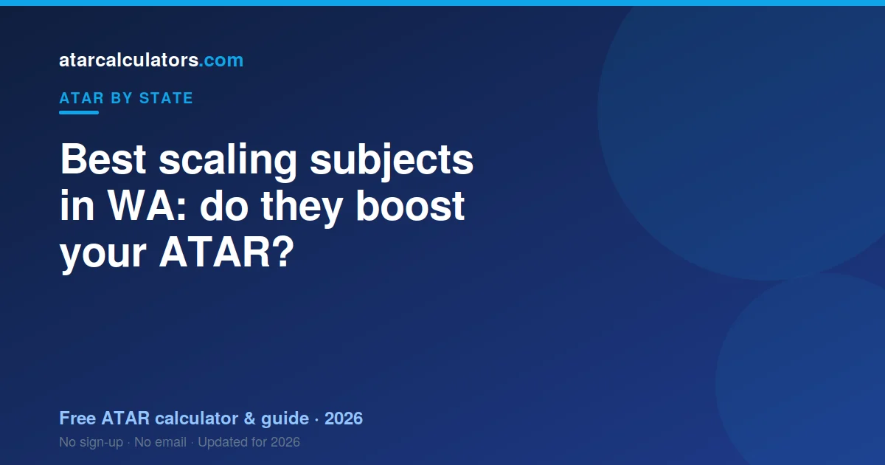

In WA, the subjects that tend to scale up are the higher maths courses, the sciences, and the languages. TISC scales each subject by how strong its group of students is, not by how hard the subject feels. A high-scaling subject only helps if you can score well in it. Picking a hard subject you struggle in usually lowers your ATAR, not lifts it.
Key takeaways
- Higher maths, sciences and languages tend to scale up the most.
- Scaling reflects how strong a subject’s group is, not how hard it feels.
- A high-scaling subject only helps if you score well in it.
- Picking a hard subject you struggle in can lower your ATAR.
- TISC publishes scaling data each year, so use it as a guide, not a rule.

Which WACE subjects tend to scale up
Across most years, the same kinds of subjects scale up in WA. They are usually the more demanding, technical ones.
The top scalers tend to be the higher maths courses, Mathematics Methods and Mathematics Specialist. The sciences follow, especially Chemistry and Physics. Languages also often scale well.
This happens because these subjects attract strong groups of students. When a subject is full of high achievers, the scaling process tends to lift its scores.
The maths courses
Maths Methods and Maths Specialist are the classic high scalers in WA. They are hard, and the students who take them tend to do well across all their subjects.
Specialist is the more advanced of the two. It is usually taken alongside Methods, not instead of it. Together they can lift a strong maths student’s ATAR.
But they are not a shortcut. If maths is not your strength, these courses can pull your marks down. Only take them if you can hold your own.
The sciences
Chemistry and Physics are the sciences most likely to scale up. They are content-heavy and exam-focused, and they attract capable students.
Biology and Human Biology are popular too. They can scale a little more gently, because they draw a wider range of students. That is not a reason to avoid them if you enjoy them.
Languages
Language courses often scale well in WA. This is partly because they are demanding, and partly because of how the cohorts are shaped.
If you already speak or study a language, this can work in your favour. Just be aware that some languages have special rules about who can enrol, to keep things fair.
Why some subjects scale up and others down
Scaling is not a reward for choosing a hard subject. It is an adjustment based on how a subject’s whole group performed.
If students in a subject also do very well in their other subjects, that subject scales up. If a subject’s group is weaker on average, it can scale down. It is about the group, not you alone.
The mistake students make with scaling
The biggest mistake is picking a subject only because it scales well, even when you are not strong in it.
Scaling lifts the whole group. But your place within that group sets your own scaled score. A weak score in a high-scaling subject can be worth less than a strong score in a subject that scales more gently.
So do not chase scaling at the cost of your marks. Do well in subjects you are genuinely good at, and let scaling help from there.
How much does scaling actually change your ATAR?
Students often overrate scaling. It matters, but it rarely turns a weak result into a great one on its own.
Scaling shifts your score by a moderate amount, up or down, based on your subject group. A few scaled points across your best four can move your ATAR. But your raw performance still does most of the work.
So think of scaling as a tailwind, not an engine. It helps a strong result travel further. It cannot rescue a subject you are struggling in.
Should you drop a subject that scales badly?
Not just because it scales gently. The real question is how well you score in it, not how it scales.
If you are doing well in a gently scaling subject, keep it. A strong scaled score there can beat a weak score in a high scaler. If you are struggling in a subject and it scales gently, that is a stronger reason to rethink it.
Talk to your teacher before dropping anything. And remember you need at least four ATAR courses, so keep your safety margin in mind.
How to choose subjects the smart way
Balance three things when you pick subjects. Choose subjects you enjoy. Choose subjects you can score highly in. Then, and only then, think about scaling.
Enjoyment and ability usually matter more than scaling, because they drive your marks. A subject you love and do well in beats a ‘better scaling’ subject you dread.
- Shortlist subjects you are strong in first.
- Check any prerequisites your target course needs.
- Use scaling to choose between two subjects you like equally.
Once you have a shortlist, try our scaling calculator to see how a mark compares once scaled. Then read the WA ATAR guide to see how it feeds your TEA.
Do easy subjects always scale down?
Not always. ‘Easy’ is the wrong word. A subject scales more gently when its group is, on average, weaker across their subjects.
That is not a judgement on the subject or on you. A capable student can still score very well in a gently scaling subject. Your own mark is what counts most.
Small-cohort courses and languages
Beyond the higher maths and sciences, small-cohort courses such as languages often scale well in WA. This is because they tend to attract small, capable groups of students who are strong across their whole program, which is what lifts a course’s scaling.
This does not make them a shortcut. You still need to rank near the top of that strong group to capture the benefit. But if you have genuine ability and interest in a language, a well-scaling course can be a real asset to your ATAR.
Building a balanced course list
The sensible way to use scaling is to start from your strengths, then check how those courses scale. Often some of your strong courses already scale reasonably. Add a higher-scaling course only if you can genuinely do well in it, and include any prerequisites for the university courses you want.
Done this way, scaling supports good choices without driving them. You end up with a balanced list of courses you can rank well in that also scale fairly, which serves your ATAR better than chasing scaling alone.
Common questions
What are the best-scaling subjects in WA?
Higher maths courses, the sciences and languages tend to scale up the most. That includes Mathematics Methods, Mathematics Specialist, Chemistry and Physics. Scaling shifts slightly each year, so treat any list as a guide.
Do hard subjects always scale up?
No. Scaling depends on how strong a subject's group is, not how hard it feels. Some demanding subjects scale up because they attract strong students, but difficulty alone does not guarantee it.
Which subjects scale down in WA?
Subjects with a broader group of students can scale more gently. This is not a judgement on the subject; it reflects the average performance of everyone taking it that year.
Should I pick subjects for scaling or for marks?
For marks. Your scaled score depends on how well you do within the group. A strong result in a subject you are good at usually beats a weak result in a high-scaling one.
Does Maths Specialist scale better than Methods?
Both scale well in most years, and Specialist is the more advanced course. But only take them if maths is a real strength, because a weak score in either can pull your ATAR down.
Do languages scale well in WA?
Language courses often scale well in WA. If you already study or speak a language, this can help. Some languages have enrolment rules to keep the process fair, so check your eligibility.
Where can I see WA scaling data?
TISC publishes scaling information each year. Use it as a guide to how subjects behaved recently, but remember it can change from year to year.
How much can scaling change my ATAR?
Scaling shifts your scores by a moderate amount, up or down, based on your subject group. Across your best four subjects it can move your ATAR, but your raw performance still does most of the work. Treat scaling as a tailwind, not an engine.